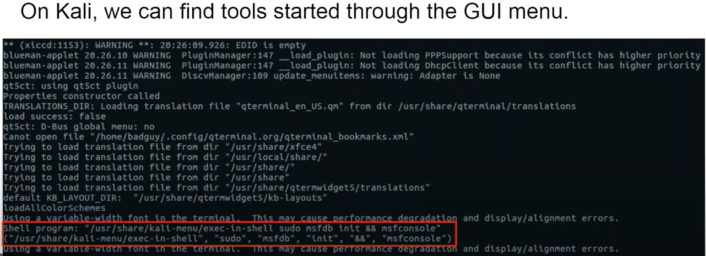
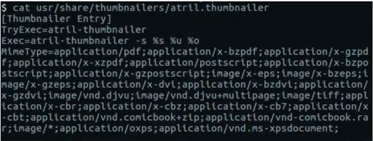
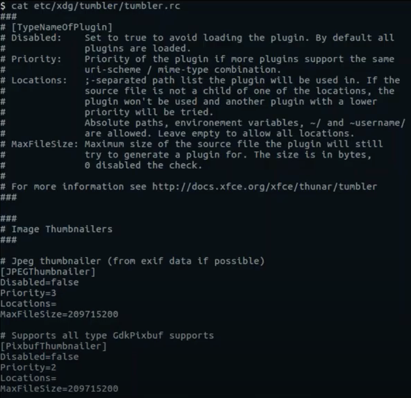
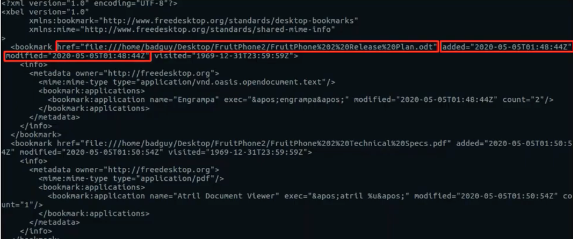

IP theft and Kali Linux is a suspect. Has the user exfiltrated pictures or documents?
Can look for info in xdg directories:
~/.cache($XDG_CACHE_HOME)~/.local/share($XDG_DATA_HOME)~/.config($XDG_CONFIG_HOME)
Can look for info in non-xdg dirs:
~/.<application_name>~(user home dir)
cat .bash_history and defaults in ./bashrc. For Kali ~/.msf4/history (doesn’t log commands for the remote shell), ~/.nc_history (created if rlwrap was used to run nc. Also ~/.viminfo: cmd history, string search history, input-line history, contents of non-empty regs, marks for several files, file marks pointing to locs in files, last search/sub pattern for ’n’ or ‘&’, buffer list, global vars. ~/.cache/sessions - by xfce-session and only if sessions are saved: list of open progs that were saved from last session (when the user last logged out) for recent Kalis. Xfce-session-[hostname]:0 and .bak - prev version of it. Client - prog or windows that needs to be opened. At the end of the file the amount of progs that are to be run and last time this session was last saved (not opened by user ). XFWM - xfce window manager.
xfwm4-[xfwm-GUID-for-session].state - saves position for all opened windows. WINDOW_ROLE. URI - the path to the file
~/.xsessions-errors - logs all errors, starts with session start date, includes user intial env variables. Useful to see what progs were run through GUI:

~/.cache/thumbnails - generated when viewing dirs with pics, docs, videos etc. what’s thumbnailed depends on systems installed thumbnailers and configs. Run debugfs against thumbnails to see the files’ first view date.
Thumbnail actually creates a jpeg text keys to store some data (URI to the file thumbnailed and modified time).
Xfce uses Thunar as its file explorer. Thunar uses Tumbler as its thumbnails. Its configs are here: $XDG_CONFIG_DIRS/tumbler/tumbler.rc (default $XDG_CONFIG_DIRS=/etc/xdg) and $XDG_CONFIG_HOME/tumbler/tumbler.rc (by default $XDG_CONFIG_HOME=~/.config) and /usr/share/thumbnailers.
Examples:


~/.local/share/recently-used.xbel - shows recently opened documents, what app was used to open them, configs in $XDG_CONFIG_DIRS/gtk-3.0/settings.ini.

References
[1] Magnet webinar on Linux Forensics